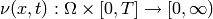
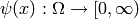
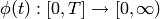
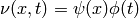
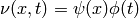
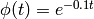

Time-dependent propensity functions¶
CmePy has limited support for time dependent propensity functions, provided
a separation of variables can be applied. In other words, CmePy can handle a
time-dependent propensity function

if there exist functions
 and
,
of the state  and time
and time  respectively, such that
 .
respectively, such that
 .
Example of usage¶
Suppose m is a model definition with at least 3 reactions. The following example shows how to scale the propensity functions for the 0-th and 2-nd reactions by the time dependent coefficient  :
from cmepy import model, solver
m = model.create(
... # model definition here
)
s = solver.create(
model = m,
sink = True,
time_dependencies = {frozenset([0, 2]) : lambda t : math.exp(-0.1*t)}
)
Further details¶
The time-dependent factors of the propensity functions can be supplied to CmePy via the optional time_dependencies keyword argument when creating a solver via the function cmepy.solver.create(). By default, reaction propensities are time independent. If specified, time_dependencies must be a mapping of the form:
time_dependencies = { s_1 : phi_1, ..., s_n : phi_n }
where each (s_j, phi_j) key-value pair is of the form:
- s_j : set of reaction indices, for example frozenset([2, 3])
- phi_j : a function phi_j(t) taking a time t and returning a scalar coefficient.
The propensities of the reactions with indices contained in s_j will all be multiplied by the coefficient phi_j(t), at time t. Reactions are indexed according to the ordering of the propensities in the model.
The reaction index sets s_j must be disjoint. It is not necessary for the union of the s_j to include all the reaction indices. If a reaction’s index is not contained in any s_j then the reaction is treated as time-independent.
Note
Since the sets of reaction indices s_1, ..., s_n are used as keys to a mapping, they must be hashable. This means that list or set values are excluded. However, frozenset instances can be used, as seen above. A frozenset works just like a set, except it is immutable.